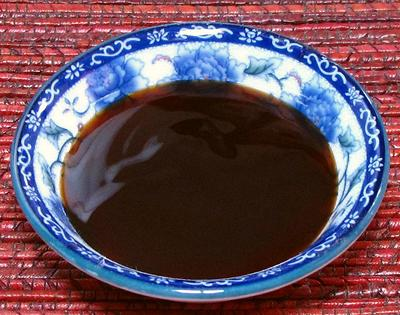
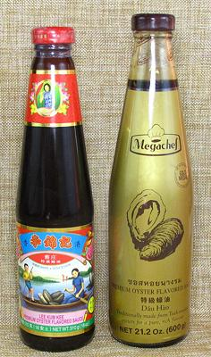

Oyster Sauce

[Oyster Flavored Sauce (USA); Nahm Man Hoi (Thai);
Dau Hào (Viet)]
This is a very important Chinese sauce, also much used in Thailand,
Vietnam and Cambodia. It was invented accidentally by Lee Kum Sheung in
Guangdong in 1888. He founded the Lee Kum Kee company to market it.
Today it is made by many companies in Asia and elsewhere, in an
extremely wide range of quality, some having very little association
with actual oysters.
This sauce must be called "oyster flavored" sauce in the USA because
it is made from extractives rather than whole oysters. Lee Kum Sheung's
original recipe was made with whole oysters and nothing else, but that
method is excessively expensive today.
This is a savory and sweet sauce, very much used all over China for
all manner of cooking, from "red cooking" to stir fries, in the home and
in restaurants.
In Thailand, it is used in many Thai/Chinese style dishes,
usually in "end of cooking" sauces, combined with stock, fish sauce
and often lime juice. As in China, it is also used in noodle dishes.
Thais consider all noodle dishes to be Chinese, and they are
the only dishes Thais eat with chopsticks.
Oyster Sauce should be refrigerated after opening.
More on Sauces & Condiments

Here are a couple bottles you might want to keep an eye out for.
Lee Kum Kee
Premium Oyster Flavored Sauce (left bottle)
is a good and widely distributed brand. Note that Lee Kum Kee sells some
other grades as well, so read the label. This sauce is made by Lee Kum
Kee USA in Los Angeles County. Ingred: Oyster Extractives (Oyster, Water,
Salt), Sugar, Water Monosodium Glutamate, Salt, Modified Corn Starch,
Wheat Flour, Caramel Color. It does contain gluten and MSG, but you
can be pretty sure it's lead free. 18 ounce bottle.
Megachef
from Thailand Premium Oyster Flavored Sauce
(right bottle) is my current favorite, but is not as widely distributed
as Lee Kum Kee. This one is Gluten and MSG free. Ingred: Oyster
Extractives (Oyster, Water), Purified Water, Sugar, Salt, Corn Starch,
Potassium Sorbate (202). Purchased from a large Asian market in
Los Angeles (San Gabriel) for 2017 US $3.29 for 21.2 ounces.
Dragonfly
Super Premium Flavored is highly recommended
by noted Thai food expert Kasma Loha-unchit. She says Dragonfly also
makes a less expensive Premium Flavored sauce which is
also good. Both have no MSG or preservatives. Kasma says Thai sauces
are generally more "oystery" and less salty than Chinese brands.
sa_oysterz 171202 - www.clovegarden.com
©Andrew Grygus - agryg@clovegarden.com - Photos
on this page not otherwise credited © cg1
- Linking to and non-commercial use of this page permitted